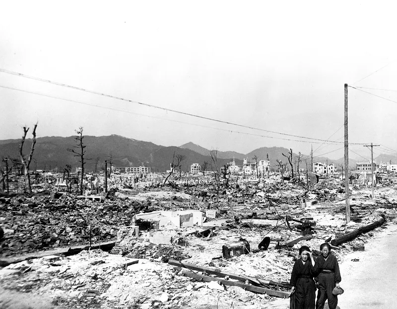

Ongeveer 30.000 jaar geleden kwamen de mensen voor het eerst naar Japan. In die tijd waren de belangrijkste eilanden verbonden met Siberië en Korea door bruggen over droog land, dus mensen staken te voet over. De eerste samenleving, de Jomon-cultuur genaamd, ontstond ongeveer 12.000 jaar geleden. Rond dezelfde tijd arriveerden de Ainu-mensen per boot vanuit Siberië.
De Jomon en Ainu hebben duizenden jaren overleefd, jagend, vissend en planten verzamelend. In 300 voor Christus kwamen de Yayoi-mensen vanuit Korea en China naar het eiland Honshu. Het waren bekwame wevers, gereedschapsmakers en boeren die rijst begonnen te verbouwen in overstroomde rijstvelden.
In 660 voor Christus kwam de eerste keizer van Japan, Jimmu Tenno, aan de macht.
Keizers controleerden Japan tot de 12e eeuw na Christus, toen militaire heersers, shoguns genaamd, de controle overnamen en met macht regeerden.
Europeanen arriveerden voor het eerst in Japan in 1543 en brachten geweren en het christendom mee. In 1635 sloot de heersende shogun Japan af voor buitenlanders en verbood Japanners om naar het buitenland te reizen. Dit isolement duurde meer dan 200 jaar. In 1868 werden de shoguns omvergeworpen en keerden de keizers terug. Dit was een tijd van grote verandering en modernisering voor Japan.
Tijdens de Eerste Wereldoorlog (1914-1917) vocht Japan aan de kant van de VS. Maar op 7 december 1941 bombardeerde Japan de Amerikaanse marinevloot in Pearl Harbor op Hawaï en de VS kwamen in de Tweede Wereldoorlog terecht. Van 1941-1945 vochten de militaire leiders van Japan tegen de VS en de geallieerden. In augustus 1945 lieten de VS atoombommen vallen op de Japanse steden Hiroshima en Nagasaki, waarbij ongeveer 115.000 mensen om het leven kwamen. Japan gaf zich een paar dagen later over.
